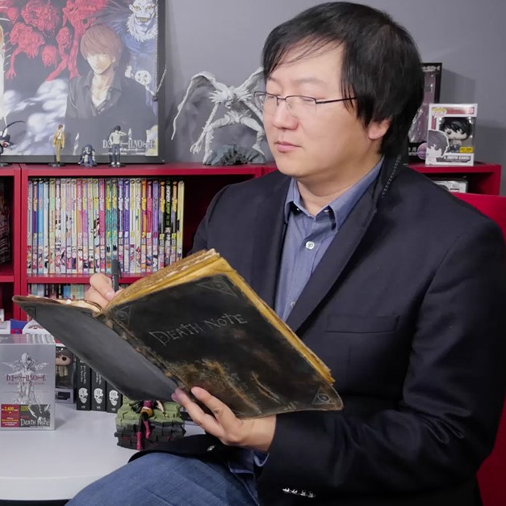

Tsugumi Ohba
Tsugumi Ohba(大場つぐみ Ōba Tsugumi?) é um(a) roteirista de mangá. Até agora, suas únicas obras conhecidas são Death Note , Bakuman e Platinum End, o que faz muitos acreditarem que "Tsugumi Ohba" seja apenas um pseudônimo de um escritor mais famoso.
Alguns acreditam que Tsugumi Ohba seja Hiroshi Gamō, autor da série de mangá Tottemo! Luckyman também publicada na Weekly Shōnen Jump,[1] devido a algumas referências da série no mangá Death Note. Especula-se que ele esconde sua identidade, pelo fato de que Death Note seja muito diferente de sua obra anterior.
lgumas características dadas pela licenciadora norte-americana Viz Media dizem que Tsugumi nasceu em Tóquio, tem como hobby colecionar xícaras de chá e passa o dia desenvolvendo enredos de mangás, enquanto segura seus joelhos na cadeira, de uma maneira muito similar a L, um dos personagens principais de Death Note, mangá escrito por Ohba e uma de suas obras mais conhecidas